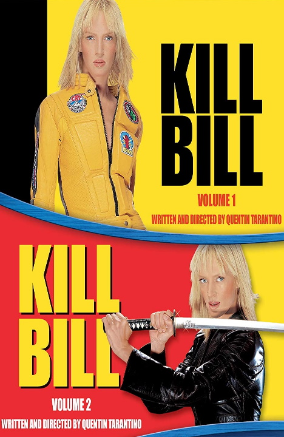

Algumas séries / sequências que já foram vistas na Spec
Harry Potter (2001 - 2011)
Classificação indicativa: 14+
Gênero: fantasia, aventura, ficção
Sobre: Harry Potter é um garoto órfão que vive infeliz com seus tios, os Dursleys. Ele recebe uma carta contendo um convite para ingressar em Hogwarts, uma famosa escola especializada em formar jovens bruxos. Inicialmente, Harry é impedido de ler a carta por seu tio, mas logo recebe a visita de Hagrid, o guarda-caça de Hogwarts, que chega para levá-lo até a escola. Harry adentra um mundo mágico que jamais imaginara, vivendo diversas aventuras com seus novos amigos, Rony Weasley e Hermione Granger.
Diretores: David Yates, Alfonso Cuarón, Chris Columbus, Mike Newell
Sobre: O pirata Jack Sparrow tem seu navio saqueado e roubado pelo capitão Barbossa e sua tripulação. Com o navio de Sparrow, Barbossa invade a cidade de Port Royal, levando consigo Elizabeth Swann, filha do governador. Para recuperar sua embarcação, Sparrow recebe a ajuda de Will Turner, um grande amigo de Elizabeth. Eles desbravam os mares em direção à misteriosa Ilha da Morte, tentando impedir que os piratas-esqueleto derramem o sangue de Elizabeth para desfazer a maldição que os assola.
Diretores: Espen Sandberg, Gore Verbinski, Joachim Rønning, Rob Marshall
Gênero: ação, crime, drama, artes marciais, suspense
Sobre: A ex-assassina conhecida apenas como "A Noiva" acorda de um coma de quatro anos decidida a se vingar de Bill, seu ex-amante e chefe, que tentou matá-la no dia do casamento. Ela está motivada a acertar as contas com cada uma das pessoas envolvidas com a perda da filha, da festa de casamento e dos quatro anos da sua vida. Na jornada, "A Noiva" é submetida a dores físicas agoniantes ao enfrentar a inescrupulosa gangue de Bill, o Esquadrão Assassino de Víboras Mortais.
